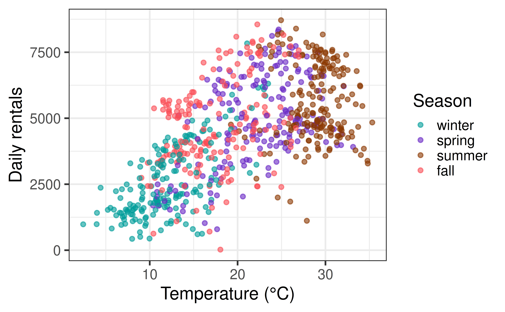
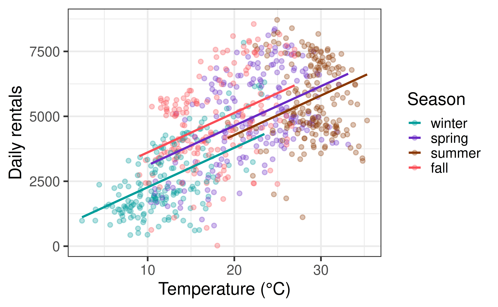

| r.squared | p.value |
|---|---|
| 0.1069 | 0 |
AE 15 review, then more than one predictor
You were asked to finish AE 15 after class. Let’s check in on each part:
Then we start multiple regression.
| r.squared | p.value |
|---|---|
| 0.1069 | 0 |
slope_over_sigma effectsize
-0.7072686 0.7072686 BMI explains about what percent of the variation in sysBP? How does that compare to age (about 15%)? Why do the two \(d\) values have opposite signs?
| Predictor | n | n in '1' group | R² | d | p-value |
|---|---|---|---|---|---|
| totChol | 4190 | NA | 0.044 | NA | 0.0000 |
| heartRate | 4239 | NA | 0.033 | NA | 0.0000 |
| glucose | 3852 | NA | 0.020 | NA | 0.0000 |
| cigsPerDay | 4211 | NA | 0.008 | NA | 0.0000 |
| currentSmoker | 4240 | 2095 | 0.017 | 0.26 | 0.0000 |
| TenYearCHD | 4240 | 644 | 0.047 | 0.62 | 0.0000 |
| prevalentStroke | 4240 | 25 | 0.003 | 0.75 | 0.0002 |
| BPMeds | 4187 | 124 | 0.065 | 1.55 | 0.0000 |
Which predictors are detectable (p < 0.05)? Which are meaningful?
set.seed(2026)
sim_sex <- function(n_samp, reps = 300) {
map(1:reps, \(i) {
fit <- lm(sysBP ~ male, data = resample(fram, n_samp))
tibble(d = coef(fit)[2] / sigma(fit), p = tidy(fit)$p.value[2])
}) |>
list_rbind() |>
summarize(mean_d = mean(d), power = mean(p < 0.05))
}
bind_rows(`n = 100` = sim_sex(100), `n = 4000` = sim_sex(4000), .id = "sample size") |>
kable(digits = 3)| sample size | mean_d | power |
|---|---|---|
| n = 100 | -0.068 | 0.060 |
| n = 4000 | -0.073 | 0.623 |
What stayed put and what changed as \(n\) grew? What does that say about the different jobs of effect size and sample size?
A researcher tests a new teaching method on 12 students and finds p = 0.30. They conclude, “The method has no effect.”
What is wrong with this conclusion? How could a power analysis have helped? What if they had tested 12,000 students and found p = 0.001 for a 0.3-point gain on a 100-point exam?
Every model so far has had one predictor. But the world is rarely that tidy:
Today: multiple linear regression (MLR).
Daily rentals from the Capital Bikeshare system in Washington, DC (you saw this in Lectures 3-7).
count, total bikes rented that daytemp_orig (temperature, °C) and season (winter, spring, summer, fall)Rows: 731
Columns: 3
$ count <dbl> 985, 801, 1349, 1562, 1600, 1606, 1510, 959, 822, 1321, 1263…
$ temp_orig <dbl> 14.110847, 14.902598, 8.050924, 8.200000, 9.305237, 8.378268…
$ season <fct> winter, winter, winter, winter, winter, winter, winter, wint…| term | estimate | std.error | statistic | p.value |
|---|---|---|---|---|
| (Intercept) | 1214.64 | 161.16 | 7.54 | 0 |
| temp_orig | 161.97 | 7.44 | 21.76 | 0 |
| term | estimate | std.error | statistic | p.value |
|---|---|---|---|---|
| (Intercept) | 2604.13 | 116.60 | 22.33 | 0 |
| seasonspring | 2388.20 | 164.22 | 14.54 | 0 |
| seasonsummer | 3040.17 | 163.35 | 18.61 | 0 |
| seasonfall | 2124.03 | 165.59 | 12.83 | 0 |
Warmer days have more rentals. Summer has more rentals than winter. Are these two findings telling us the same thing or different things?

Season and temperature are related to each other. If we only use temperature, what is the temperature slope “absorbing”?
Recall: the simple linear regression model assumes
\[ Y|X\sim N(\beta_0 + \beta_1 X, \sigma_{\epsilon}^2) \]
Similarly: the multiple linear regression model assumes
\[ Y|X_1, X_2, \ldots, X_p \sim N(\beta_0 + \beta_1 X_1 + \beta_2 X_2 + \dots + \beta_p X_p, \sigma_{\epsilon}^2) \]
At any combination of the predictors, the mean response is
\[ \mu_{Y|X_1, \ldots, X_p} = \beta_0 + \beta_1 X_{1} + \dots + \beta_p X_p \qquad \hat{Y} = \hat{\beta}_0 + \hat{\beta}_1 X_{1} + \dots + \hat{\beta}_p X_{p} \]
| term | estimate | std.error | statistic | p.value |
|---|---|---|---|---|
| (Intercept) | 745.79 | 187.48 | 3.98 | 0.00 |
| temp_orig | 152.23 | 12.64 | 12.05 | 0.00 |
| seasonspring | 848.72 | 197.08 | 4.31 | 0.00 |
| seasonsummer | 490.20 | 259.01 | 1.89 | 0.06 |
| seasonfall | 1342.87 | 164.59 | 8.16 | 0.00 |
season has four levels, so R makes three indicator variables (winter is the reference level):
\[ \widehat{\text{count}} = \hat{\beta}_0 + \hat{\beta}_1 \,\text{temp} + \hat{\beta}_2 \,\text{spring} + \hat{\beta}_3 \,\text{summer} + \hat{\beta}_4 \,\text{fall} \]
\[ \widehat{\text{count}} = 746 + 152.2 \,\text{temp} + 849 \,\text{spring} + 490 \,\text{summer} + 1343 \,\text{fall} \]

How many lines? How many slopes? How many intercepts? Which coefficient moves a line up or down?
The coefficient \(\hat{\beta}_j\) is the expected change in the mean of \(y\) when \(x_j\) increases by one unit, holding the values of all other predictors constant.
Interpret the temperature coefficient in context. Interpret the summer coefficient in context. What does the intercept represent, and is it meaningful?
Notice that the temperature slope in the MLR is not the temperature slope from the simple model:
| model | temp_orig slope |
|---|---|
| count ~ temp_orig | 162.0 |
| count ~ temp_orig + season | 152.2 |
Why did the slope change (a little)? What was the simple model’s slope absorbing?
Sales, Temperature, and your categorical variable.How many bikes do we expect on a 25°C summer day?
| season | min_temp | max_temp |
|---|---|---|
| winter | 2.4 | 23.5 |
| spring | 10.4 | 33.1 |
| summer | 19.2 | 35.3 |
| fall | 9.1 | 27.0 |
Would you trust a prediction for a 30°C winter day?
Sales for a new day.In our plot, all four seasons have the same temperature slope (parallel lines).
Is it believable that an extra degree adds the same number of rentals in winter as in summer?
Next time: categorical predictors in more depth, and what to do when the slope differs by group.
predict()), but extrapolation can happen in many directions.